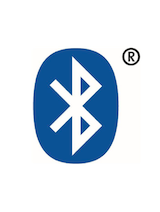
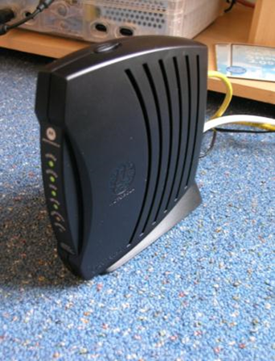
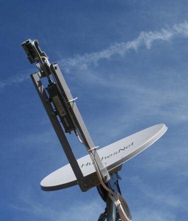

PCH1-The Basics-2 <<
Previous Next >> 40923206 UNIT 2 Page 25~36
PCH2-Procedures and Safety-1
p.19
Introduction
介紹
This lesson covers the basic procedures and safety precautions with which technicians must be competent and comfortable before working on various PC hardware. First we will discuss the hazards of computer systems and tools, including electricity, electrostatic discharge (ESD), chemicals, and other dangers that can hurt you when you are working on the various forms of computer hardware. We will also cover the safety measures and procedures that you must employ to minimize risk, such as using ESD straps, ESD mats, self-grounding systems, and equipment grounding. We will then discuss personal safety, including removal of jewelry to protect yourself and computers, proper lifting techniques and weight limitations, and removal of electrical power. Finally, we will cover electrical fire safety, cathode ray tube (CRT) safety and disposal, cable management, and local government regulation compliance.
本課程涵蓋了基本程序和安全預防措施，技術人員在使用各種PC硬件之前必須具備一定的能力和舒適度。 首先，我們將討論電腦系統和工具的危害，包括電流，靜電釋放（ESD），化學物質以及在使用各種形式的電腦硬件時可能傷害您的其他危害。 我們還將介紹必須使用以最小化風險的安全措施和程序，例如使用ESD皮帶，ESD墊，自接地系統和設備接地。 然後，我們將討論人身安全，包括為保護自己和電腦而移走珠寶，適當的舉陞技術和重量限制以及移去電源。 最後，我們將涵蓋電氣消防安全，陰極射線管（CRT）安全和處置，電纜管理以及地方政府法規合規性。
p.20
Operational Procedures: Electrical Safety
操作步驟：電氣安全
Electricity is a significant hazard in working with computer systems and tools. Electricity is required to make workstations operate, but if you are not careful, electricity can cause serious injury to you and major damage to the computer you are working on.
With regard to human injury, technicians can receive an electrical shock from computers or electrical outlets if special care is not taken when working with them. It is important to check all the power outlets to ensure they are working properly. When checking the outlets, you should verify that the outlet is providing the correct amount of power. If you are working in the United States, then you should expect to receive a voltage of 115 VAC to 120 VAC (volts of alternating current) from the power outlets in an office or home. This can be verified using a simple three-prong tester, voltmeter, or multimeter. Procedurally, you must never pull the cords out by the wires, as this can cause damage and fraying of the cables. Instead, you should plug in and remove cables by the plug on the end of the cord. It is important that you never use a frayed or damaged power cable
電力是使用電腦系統和工具的重大危險。要使工作站正常工作，必須通電，但是如果不小心，電流可能會對您造成嚴重傷害並嚴重損害正在使用的計算機。
關於人身傷害，如果在操作電腦或電源插座時未特別注意，則技術人員可能會從電腦或電源插座中遭受電擊。檢查所有電源插座以確保它們正常工作很重要。檢查插座時，應驗證插座是否提供了正確的電量。如果您在美國工作，則應該期望從辦公室或家庭的電源插座接收到115 VAC至120 VAC（交流電壓）的電壓。可以使用簡單的三叉測試儀，電壓表或萬用表進行驗證。程序上，切勿將電線從電線中拉出，因為這會導致電纜損壞和磨損。相反，您應該插入插頭並通過電源線末端的插頭拔出電纜。切勿使用磨損或損壞的電源線，這一點很重要
In addition to keeping themselves safe, technicians need to keep computers safe from electrical damage. It is common to use a surge protector to protect computers from power spikes or surges. A power strip is not the same thing as a surge protector. Surge protectors are rated in joules (J), a unit of energy. The rating indicates the number of joules the surge protector can absorb before failure. A higher rating indicates greater protection for the computer. Also, you must not overload the surge protectors, and must never daisy-chain them, or plug one surge protector into another: this causes higher amperage draws that can lead to fires.
除了保護自己的安全外，技術人員還需要保護電腦免受電氣損壞。 通常使用電湧保護器來保護電腦免受電源尖峰或電湧的影響。 配電盤與電湧保護器不是一回事。 電湧保護器的額定功率單位為焦耳（J）。 額定值表示電湧保護器在故障之前可以吸收的焦耳數。 額定值越高，表示對電腦的保護越高。 另外，您一定不能使電湧保護器過載，也不能以菊花鏈的方式將其電湧，或將一個電湧保護器插入另一個電湧保護器：這會導致電流消耗增加，從而引發火災。
If continuous power to a workstation is necessary, you can use an uninterruptible power supply (UPS). A UPS should never be used for laser printers, as it draws too much power through the UPS and can cause damage to the printer.
如果需要為工作站持續供電，則可以使用不間斷電源（UPS）。 切勿將UPS用於激光打印機，因為它會通過UPS消耗過多功率，並可能損壞印刷機。

When working with a computer, the largest amount of voltage you will find is located inside the computer’s power supply unit (PSU). You should never disassemble a PSU; when it is broken, simply replace the entire unit. Power supply units are relatively inexpensive, so it is a best practice to simply replace them. Some technicians wonder why they should not disassemble or open the PSU and try to fix it, but the reason is simple — it is very dangerous. A PSU has numerous electrical components that allow it to convert the high-voltage 115-120 VAC (or 230-240 VAC) power into the 12 VDC (volts direct current) that is usable by the computer. Some of these components are capacitors, which cause the power supply to retain lots of voltage (up to 10,000 volts or more) even after the computer is turned off and even after the computer and PSU are unplugged. Therefore, if you want to see the inside of a PSU, search for it on the Internet and look at a picture. It is much safer.
使用電腦時，您會發現最大的電壓位於計算機的電源設備（PSU）內部。 您切勿拆卸電源設備； 損壞時，只需更換整個單元。 電源設備相對便宜，因此最佳實踐是簡單地更換它們。 一些技術人員想知道為什麼不應該拆卸或打開PSU並嘗試對其進行修復，但是原因很簡單-這非常危險。 PSU具有許多電氣組件，可將115-120 VAC（或230-240 VAC）高壓電源轉換為計算機可使用的12 VDC（直流電壓）。 這些組件中的一些是電容器，即使在關閉電腦後以及拔下電腦和PSU的電源後，電源也會保持大量電壓（最高10,000伏或更高）。 因此，如果要查看PSU的內部，請在Internet上搜索並查看圖片。 這更安全。

p.21
Power Supplies
電源
Technicians should use surge protectors or surge suppressors to protect computers from power spikes and surges. These devices are specifically designed to absorb overvoltage conditions that would damage computers, printers, and monitors. While these devices will protect the computer from damage resulting from an overvoltage condition, they do not protect it from an undervoltage condition. Undervoltage is a condition that occurs when insufficient voltage is provided by the outlet to the computer. In situations where it is essential that the computer not lose power, technicians must install an uninterruptible power supply (UPS) to provide emergency power when a power failure (blackout) occurs or an undervoltage condition (brownout) occurs. The UPS runs the computer from its internal battery continuously and recharges the UPS’s battery while power is available. Once power is lost, the UPS continues to power the computer for up to 15 minutes (purportedly). This provides the user enough time to save work and safely power down the workstation. Another device that helps in undervoltage conditions is the standby power supply (SPS), which runs the computer directly from the wall outlet (AC power), but switches to the battery in less than a millisecond when a power outage occurs. An SPS device does not provide constant power, like a UPS device. For this reason, most technicians prefer UPS devices over SPS devices, so UPS devices are much more common in the marketplace.
技術人員應使用電湧保護器或電湧抑制器來保護計算機免受電湧和電湧的影響。這些設備經過專門設計，可以吸收可能損壞電腦，打印機和顯示器的過電壓情況。儘管這些設備可以保護電腦免受過壓狀態造成的損壞，但它們不能保護計算機免受欠壓狀態的影響。當計算機的插座提供的電壓不足時，就會發生欠壓情況。在必須確保電腦不掉電的情況下，技術人員必須安裝不間斷電源（UPS），以在發生電源故障（停電）或發生欠壓情況（斷電）時提供應急電源。 UPS會使用其內部電池連續運行電腦，並在有電時為UPS的電池充電。一旦斷電，UPS將繼續為電腦供電長達15分鐘（據稱）。這為用戶提供了足夠的時間來節省工作並安全地關閉工作站電源。備用電源（SPS）是在欠壓情況下提供幫助的另一種設備，該備用電源直接從壁裝電源插座（交流電源）運行電腦，但在斷電時不到一毫秒即可切換到電池。 SPS設備不像UPS設備那樣提供恆定功率。因此，大多數技術人員更喜歡UPS設備而不是SPS設備，因此UPS設備在市場上更為普遍。

Uninterruptible power supplies are rated in various ways, including their runtimes, network support capabilities, automatic shutdown capabilities, and surge suppression. The runtime dictates the amount of time a computer will keep running on power from the UPS’s battery once source power is removed. Usually, you want to use a UPS with at least 15 minutes of runtime support. The bigger the battery, the longer the runtime. The runtime is calculated based on volt-amps, which is discussed in more detail in a later section. UPS devices can also have software that allows them to be connected to the network. Therefore, when the UPS notices a drop in power, it can send out a message to the users that the network is being shut down because of power loss. Some UPS devices support automatic shutdown of the connected computer or server, so that once a switch to battery power occurs, the UPS sends a shutdown signal to the connected machine. Finally, most UPS devices also provide surge suppression capabilities, rated in joules.
The last type of device technicians can use is called a power conditioner or line conditioner. These devices do not have any battery backup capability, but can rectify the power from a dirty power condition (where power fluctuates greatly) to a steady 115-120 VAC power condition. These devices can raise undervoltage conditions to normal levels, as well as cut overvoltage conditions back down to standard levels. This is very important if your systems are going to run from a backup generator, or if you are operating in an area with unstable power (such as in some developing countries).
不間斷電源的額定方式有多種，包括其運行時間，網絡支持功能，自動關機功能和電湧抑制。運行時間規定了斷開電源後電腦將繼續使用UPS電池供電的時間。通常，您要使用具有至少15分鐘運行時間支持的UPS。電池越大，運行時間越長。運行時間是基於伏安計算的，這將在後面的部分中詳細討論。 UPS設備還可以具有允許其連接到網絡的軟件。因此，當UPS注意到電源中斷時，它可以向用戶發送一條消息，通知您由於斷電而導致網絡正在關閉。某些UPS設備支持所連接的電腦或服務器的自動關機，因此一旦切換到電池電源，UPS就會向所連接的電腦發送關機信號。最後，大多數UPS設備還提供以焦耳為單位的電湧抑制功能。
技術人員可以使用的最後一種設備稱為功率調節器或線路調節器。這些設備沒有任何備用電池功能，但是可以將電源從骯髒的電源狀況（電源波動很大）整流為穩定的115-120 VAC電源狀況。這些器件可將欠壓條件提高到正常水平，並將過壓條件降低迴標準水平。如果您的系統要使用備用發電機運行，或者您在電力不穩定的區域（例如在某些發展中國家）運行，則這非常重要。
p.22
Power Variation
功率變化
It is important to understand the technical terms for the various undervoltage and overvoltage conditions that could exist, such as power surge, dirty power, sag, brownout, and blackout, as well as the device that provides protection to the computers and computer system equipment when these conditions occur. A power surge occurs when a short increase in AC voltage happens, such as from 120 VAC to 130 VAC. To protect computers from this condition, you would use a surge suppressor. Dirty power occurs when AC voltage continuously fluctuates, for example between 113 VAC and 130 VAC. To correct this condition, an in-line UPS or line conditioner should be used. A sag occurs when an unexpected short decrease in voltage occurs. This can be corrected with either a line conditioner or a UPS. A brownout is a more significant, larger voltage drop than a sag, and could result in the voltage being cut in half (such as 120 VAC dropping to 60 VAC). This is too much for a line conditioner to handle, so a UPS would be required. Finally, if there is a complete loss of power, this is called a blackout. Only a UPS can solve this problem, but only for a short duration (purportedly about 15 minutes). If operations must continue after this, you would need to switch to a backup generator to provide the power required.
重要的是要理解可能存在的各種欠壓和過壓條件的技術術語，例如電湧，脹電源，跌落，掉電和停電，以及在以下情況下為電腦和電腦系統設備提供保護的設備：這些情況發生。當交流電壓發生短暫升高（例如從120 VAC到130 VAC）時，就會發生電湧。為了保護電腦免受這種情況的影響，應使用電湧抑制器。當交流電壓持續波動（例如在113 VAC和130 VAC之間）時，會產生臟電。要糾正這種情況，應使用串聯式UPS或線路調節器。當電壓出現意外的短時下降時，就會發生下垂。可以使用電源調節器或UPS進行糾正。掉電比下垂更為顯著，更大的電壓降，並且可能導致電壓降低一半（例如120 VAC降至60 VAC）。對於線路調節器來說，這太多了，因此需要UPS。最後，如果完全斷電，則稱為停電。只有UPS可以解決此問題，但只能持續很短的時間（據說大約15分鐘）。如果此後必須繼續操作，則需要切換到備用發電機以提供所需的電源。
p.23
Protecting People and Property
保護人身和財產
Electricity can be a common cause of fire, especially if the electrical circuits are overloaded. If a computer or outlet catches on fire, you should use a class C extinguisher, which is a carbon dioxide (CO2)-based extinguisher. You should not attempt to extinguish an electrical fire with water, because water conducts electricity. If the fire is small, you may use a portable extinguisher to put the fire out immediately, but you should never put yourself in harm’s way. If the fire begins to get out of control, everyone should move to a safe area and call 911 for help immediately. Some server rooms have built-in fire suppression systems that release CO2 or halon when a fire alarm occurs. Halon is a toxic compressed gas, in liquid form, that chemically disrupts a combustion reaction. A CO2 system is designed to flood the room with carbon dioxide in order to remove all oxygen from the room, thereby killing the fire. People who are working in a server room and hear the fire alarm sounding must immediately vacate the area and get to a safe location. This is a life-threatening situation, both because of the fire and because of the potentially lethal nature of the fire-suppression systems.
電力可能是引起火災的常見原因，尤其是在電路過載的情況下。如果電腦或插座著火，則應使用C類滅火器，它是一種基於二氧化碳（CO2）的滅火器。您不應嘗試用水滅火，因為水可以導電。如果火很小，則可以使用便攜式滅火器將火立即撲滅，但絕對不要傷害自己。如果火勢開始失控，所有人應移至安全區域並立即撥打911尋求幫助。一些服務器機房具有內置的滅火系統，當發生火災警報時，這些系統會釋放CO2或哈龍。哈龍是有毒的壓縮氣體，呈液態，化學上會破壞燃燒反應。 CO2系統設計用於向房間充斥二氧化碳，以清除房間中的所有氧氣，從而撲滅大火。在服務器機房工作並聽到火警警報的人員必須立即離開該區域並到達安全位置。由於起火以及滅火系統的潛在致命特性，這是威脅生命的情況。
p.24
Operational Procedures: Electrostatic Discharge
操作步驟：靜電放電
Another major safety hazard for computer systems and components is electrostatic discharge (ESD). ESD damage is caused by the discharge of static electricity that has been built up by the human body in the course of everyday events, such as walking, standing and sitting at our desks, and other activities. In drier (less humid) environments, static electricity builds up more quickly and becomes more of an issue. This is especially true during winter months. While static electricity cannot directly harm humans very much, it can be deadly to computer components. A person builds static electricity that can reach 20,000 to 25,000 volts, but is of a low amperage (making it safe for humans). When you touch something of lower electrical potential, such as the metal case of the computer or the circuit board of an expansion card, the static electricity in your body is discharged into that component, causing damage. If you touch a circuit board without taking ESD precautions, ESD may occur and cause permanent failure or an intermittent failure of the component.
You can protect computer equipment from ESD fairly easily. First, you should use an antistatic wrist strap, also known as an ESD strap.
電腦系統和組件的另一個主要安全隱患是靜電放電（ESD）。 ESD損壞是由人體在日常活動（例如走路，站立和坐在辦公桌旁以及其他活動）過程中積聚的靜電釋放引起的。在乾燥（濕度較低）的環境中，靜電積聚更快，成為一個更大的問題。在冬季尤其如此。儘管靜電不會直接對人類造成太大傷害，但對電腦組件而言可能是致命的。一個人積聚的靜電可以達到20,000到25,000伏，但電流強度很低（對人類安全）。當您觸摸電勢較低的物體（例如計算機的金屬外殼或擴展卡的電路板）時，體內的靜電會釋放到該組件中，從而造成損壞。如果在未採取ESD預防措施的情況下觸摸電路板，則可能會發生ESD，並導致組件永久性故障或間歇性故障。
您可以相當容易地保護電腦設備免受ESD的影響。首先，應使用防靜電腕帶，也稱為ESD腕帶。

These devices are very inexpensive and are the best method of protecting equipment against ESD. To be effective, one end of the strap must be grounded (by clipping it to something such as to the bare metal of the computer case), and the other end is placed around your wrist like a bracelet. This continually causes a discharge from the body to the computer case, thereby protecting the internal computer components. Because of the high voltage present inside a cathode ray tube (CRT) monitor, you should not wear an ESD wrist strap when working inside a CRT monitor.
If you do not have an ESD strap, you can employ the second precautionary method, called grounding against the chassis. In this method, you touch any unpainted metal part of the computer case to discharge the static electricity from your body before touching the sensitive components (such as expansion cards). This method is quite good, but you must remember to ground yourself against the case every time before touching a component. The last precautionary method is to use anti-static bags. This procedure is useful during transport of various components. Basically, you place the components and cards inside the anti-static bag to protect them from ESD while you are carrying them from one location to another.
這些設備非常便宜，是保護設備免受ESD影響的最佳方法。為使之有效，必須將腕帶的一端接地（通過將其修剪到諸如電腦殼裸露的東西上），另一端像手鐲一樣放在手腕上。這連續地導致從身體向電腦機殼的放電，從而保護了內部電腦組件。由於陰極射線管（CRT）顯示器內部存在高壓，因此在CRT顯示器內部工作時，請勿佩戴ESD腕帶。
如果沒有ESD綁帶，則可以採用第二種預防方法，即與機箱接地。通過這種方法，在觸摸敏感組件（例如擴展卡）之前，請觸摸電腦機箱上任何未上漆的金屬部分，以從身上釋放靜電。這種方法相當不錯，但是每次觸摸組件之前，您都必須記住要使自己始終與外殼接觸。最後一種預防方法是使用防靜電袋。此過程在運輸各種組件時很有用。基本上，將組件和卡從一個位置搬運到另一位置時，請將其放置在防靜電袋中，以防靜電。

To prevent ESD we must ensure we handle components properly. Never touch the face of the cards where the components and wiring are located; only handle cards by the edges. Additionally, always use proper ESD straps or grounding techniques before handling the cards. You also should remove jewelry and avoid loose clothes, since they may get caught in the computer or inadvertently cause a static charge to be transferred into a component. Another great technique is the use of an anti-static mat or workbench. Many server rooms and IT shops have these mats installed, and they provide a good method of keeping yourself grounded while working. You can also raise the humidity of the room to minimize the chances of static build-up. Most computer server rooms keep humidity between 40 and 50 percent to minimize electrostatic build-up, but often you will not have control over the humidity as a technician. You also want to avoid carpeted areas when possible, as walking across carpet creates a faster buildup of static electricity in the body. Finally, never use electrical or magnetic tools on the workstation, as the electrical motors from drills, impact wrenches, and vacuums create static electricity that can be discharged into fragile components.
為了防止ESD，我們必須確保正確處理組件。切勿觸摸組件和配線所在的卡的表面；只能處理邊緣的卡。此外，在處理插卡之前，請始終使用正確的ESD腕帶或接地技術。您還應卸下珠寶首飾並避免穿寬鬆的衣服，因為它們可能會卡在電腦中或無意間將靜電轉移到組件中。另一個很棒的技術是使用防靜電墊或工作台。許多服務器機房和IT商店都安裝了這些墊子，它們是在工作時保持接地的一種好方法。您還可以提高房間的濕度，以最大程度減少靜電積聚的機會。大多數電腦服務器機房將濕度保持在40％到50％之間，以最大程度地減少靜電積聚，但是作為技術人員，您通常無法控制濕度。您還希望盡可能避免舖有地毯的區域，因為在地毯上行走會在體內更快地積聚靜電。最後，切勿在工作站上使用電動或磁性工具，因為鑽頭，衝擊扳手和真空吸塵器產生的電動機會產生靜電，這些靜電會排放到易碎的部件中。
PCH1-The Basics-2 <<
Previous Next >> 40923206 UNIT 2 Page 25~36